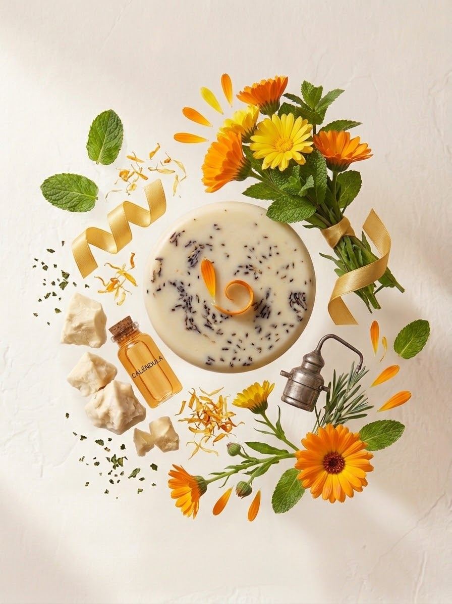
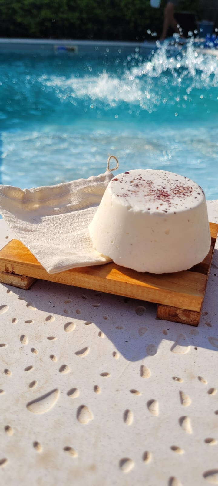
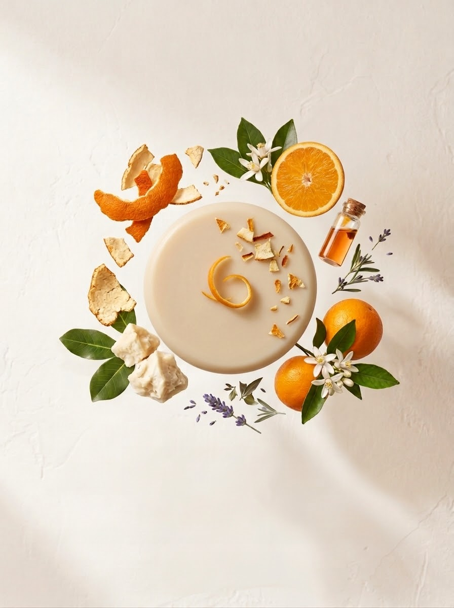
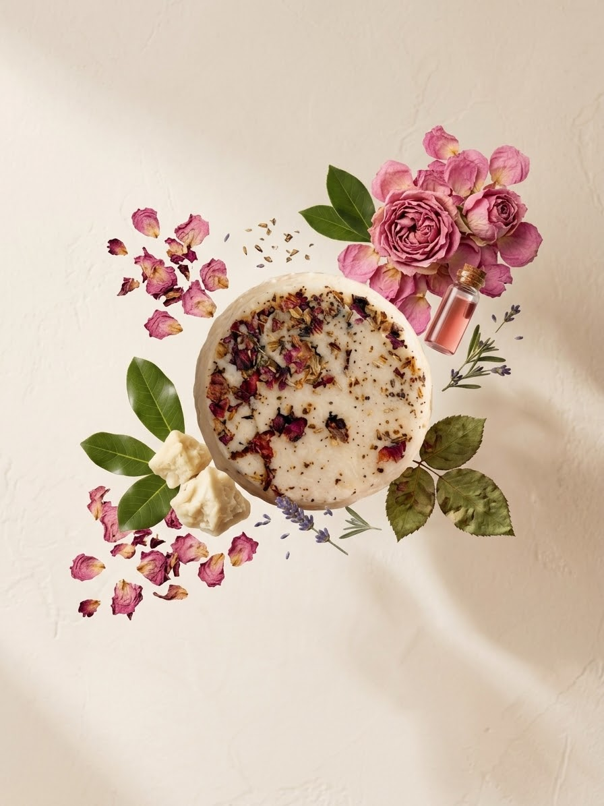
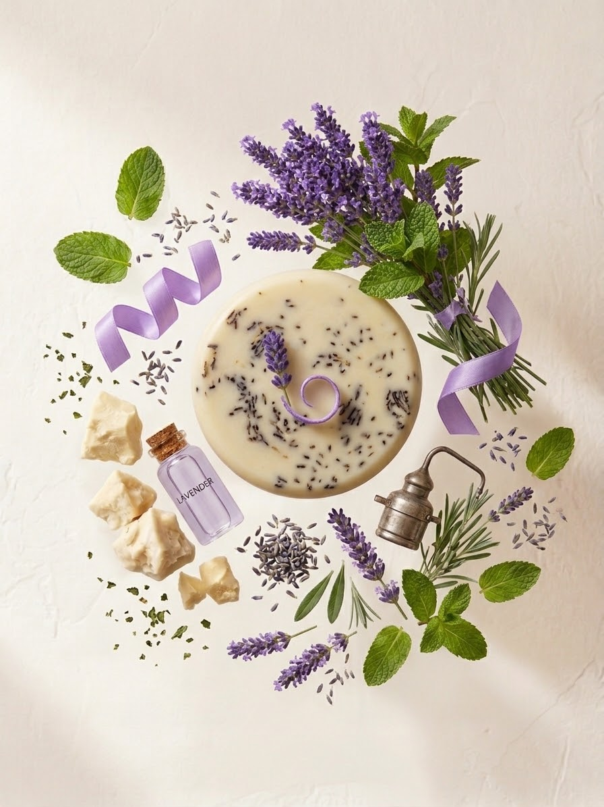
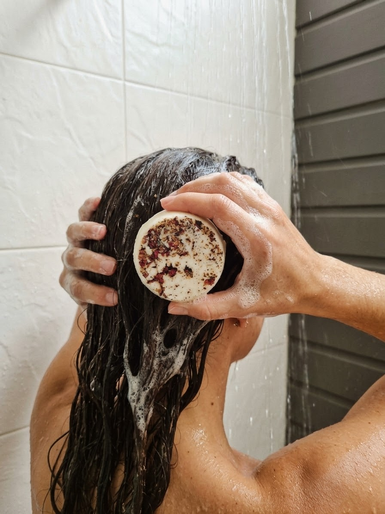

Cabello con ondas
Una opción pensada para acompañar el cuidado del cabello con ondas.
Consultar variedad →MES DE LA RECONEXIÓN
Tu rutina puede ser diferente. Descubrí una nueva forma de cuidar tu cabello con el shampoo sólido de Allpaykú.
Descubrí tu variedad
UNA NUEVA FORMA DE CUIDARTE
El shampoo sólido es una alternativa práctica para transformar tu rutina de cuidado capilar. Fácil de usar y pensado para acompañar las necesidades de distintos tipos de cabello.
Fácil de aplicar y cómodo para llevar a todos lados.
Elegí la presentación que mejor se adapte a tu rutina.
Cuatro variedades para distintas necesidades capilares.
ENCONTRÁ TU SHAMPOO
Conocé las opciones disponibles y elegí la que mejor acompañe las necesidades de tu pelo.

Una opción pensada para acompañar el cuidado del cabello con ondas.
Consultar variedad →
Una alternativa para acompañar el cuidado del cabello normal a seco.
Consultar variedad →
Una opción orientada al cuidado del cabello dañado.
Consultar variedad →
Una alternativa pensada para las necesidades del cabello graso.
Consultar variedad →Cada cabello es diferente, pero hay experiencias que hablan por sí solas.
Probé el shampoo para cabellos dañados. Muy bueno!!
@marcelaalejandra1541Son excelentes. Lo uso hace muchísimo. El único champu que soporta mi pelo. Porque probé Miles...
@lau_laura83Muy buenos todos los productos 👏
@sandrasandoval.50ELEGÍ TU PRESENTACIÓN
El mismo producto, dos tamaños para acompañar tu día a día.
Aproximadamente 40 lavados
$5.600
ConsultarAproximadamente 80 lavados
$12.000
ConsultarEl rendimiento es aproximado y puede variar según el uso. Consultá disponibilidad de variedades por WhatsApp.
ASÍ DE SIMPLE
Aplicá el shampoo sólido directamente sobre el cabello mojado.
Deslizá la barra sobre el pelo hasta generar espuma y continuá con tu lavado habitual.
Quiero saber más
LA EXPERIENCIA ALLPAYKÚ
Visitá nuestro Instagram para conocer las opiniones y experiencias de quienes ya probaron el shampoo sólido.
Conocé nuestro InstagramMES DE LA RECONEXIÓN
Elegí tu variedad y descubrí otra manera de cuidar tu cabello.
Consultanos por WhatsAppAl contactarnos, los datos que compartas se utilizarán para responder tu consulta y gestionar tu solicitud. Conocé nuestra política de privacidad y los términos y condiciones.